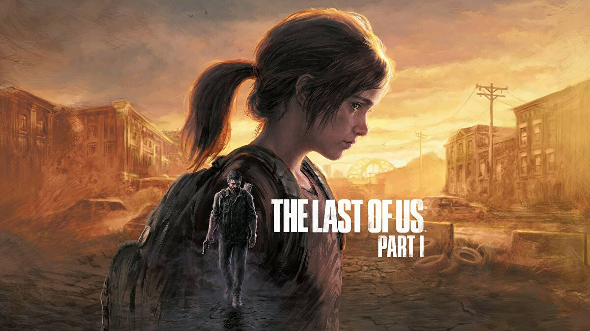
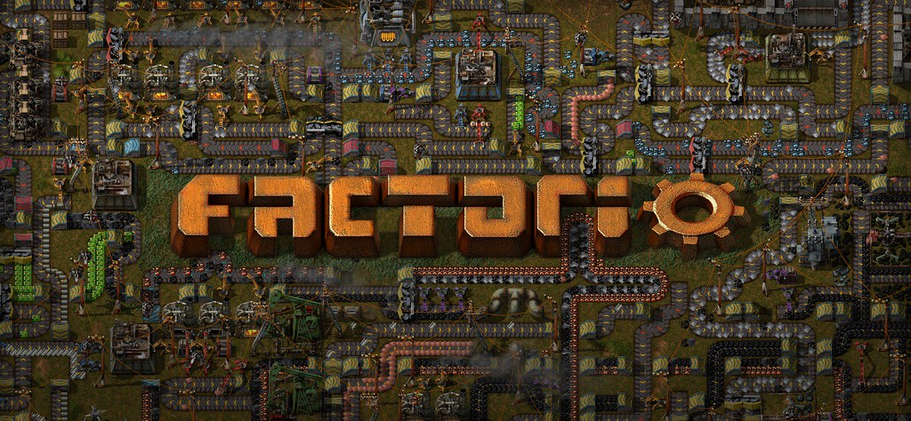
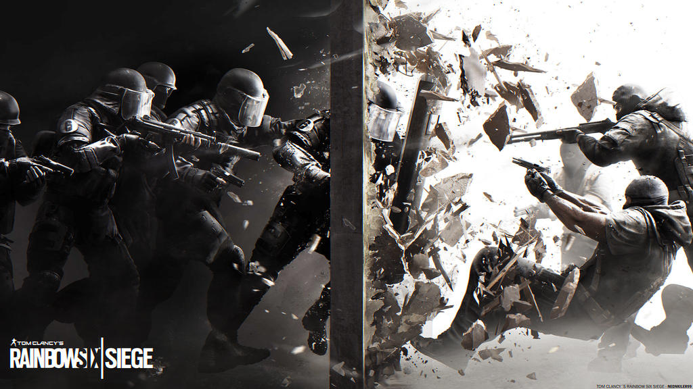

Hobbies
| Hobbies | Beschrijving |
|---|---|
| Freerunnen | Ik beoefen Freerunnen nu ongeveer 4 jaar en ben 2.5 jaar daarvan ook docent binnen het Freerunnen. |
| Programeren | Ik Volg nu de opleiding software developer omdat ik het tijdens mijn vorige opleiding (ICT helpdesk medewerker) het leuk vond om dingen te progameren zoals een voice assistance met python. |
| Games | In mijn vrije tijd vind ik het leuk om met mijn vrienden te praten en Gameste spelen. |
Freerunnen
Freerunning, ook wel bekend als parkour, is een discipline waarbij je op een efficiente en creatieve manier door stedelijke omgevingen of andere obstakels beweegt met behulp van acrobatiek, atletisch vermogen en ruimtelijk bewustzijn. Het wordt gekenmerkt door vloeiende bewegingen, sprongen, salto's en andere indrukwekkende manoeuvres. Freerunners gebruiken vaak de omgeving om hen heen op inventieve manieren, zoals het overklimmen van hekken, het beklimmen van muren of het springen tussen gebouwen. Het is zowel een sport als een kunstvorm, waarbij zelfexpressie en persoonlijke stijl in beweging centraal staan
progameren
Ik volg nu de opleiding software developer omdat ik het leuk vind om met progameer projecten bezig te zijn zoals het ontwerpen en bouwen van een website: home.parkourapeldoorn.nl en heb bouwen van een voice assistance.
Games
De laatste tijd speel ik meerdere spellen zoals: The last of us part 1/2, Factorio en rainbow six siege.
  